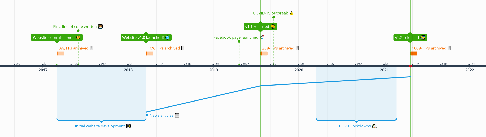
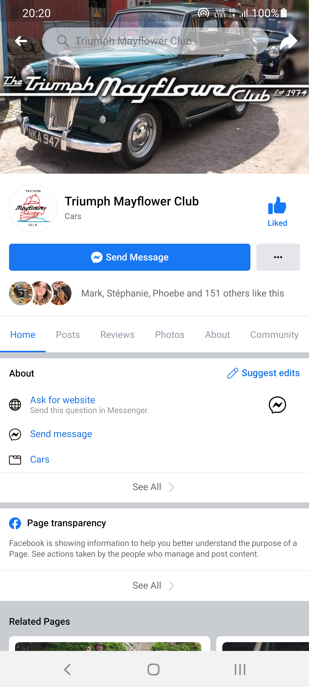
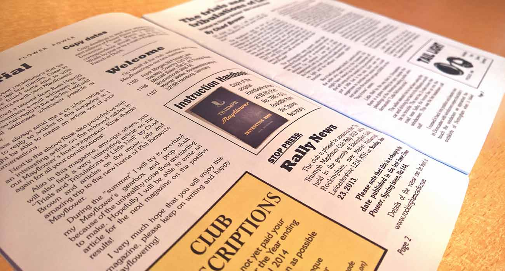
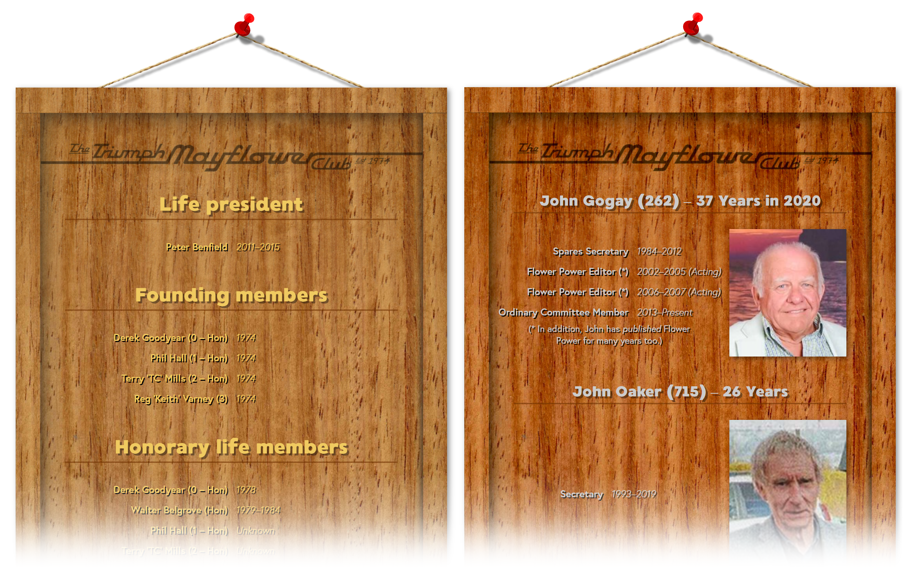
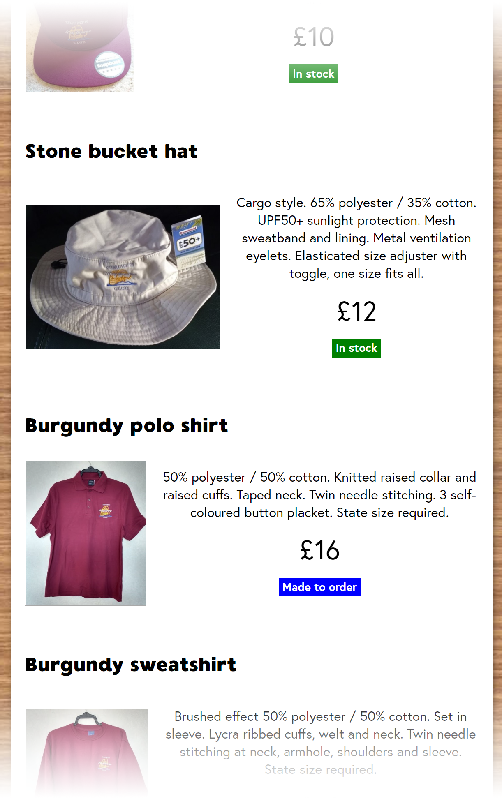
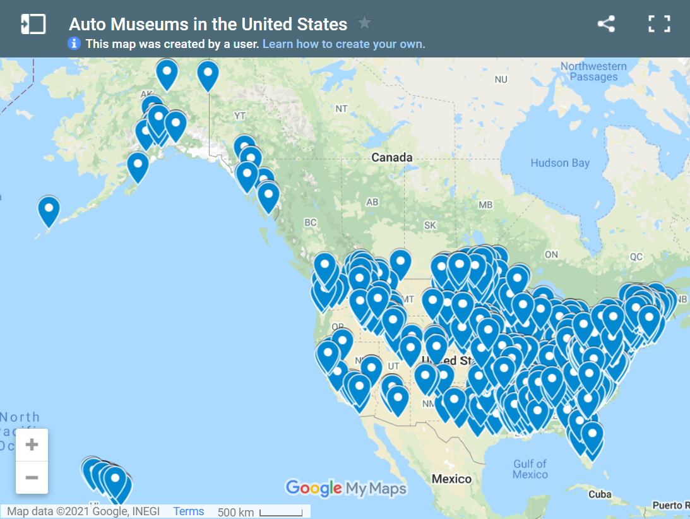

Website v1.2, at Long Last!
Hopefully the last big gap between major website releases…
· 22nd April 2021
Nearly a year and a half since our last major release, we finally have some juicy new features for you lovely people. The last two years have been crazy for everyone, for obvious reasons, but things seem to be beginning to return to some degree of normalcy.
COVID has had a profound impact on near enough every facet of all of our lives. For the club in particular, it’s meant no in-person meets, resulting in a thoroughly cut-back social calendar, and even the AGM had to be first postponed and then outright cancelled! With lockdown lifting, many people now being able to get their vaccines and the summer sun starting to shine, the future is at last beginning to look bright once more.
Anyway, without further ado, let’s begin by taking a quick look back at where the website has come since it started life four years ago.
The journey so far…
Timeline of the website’s history (click to enlarge)
In the time since the website was first published, we have:
- Added 92 content updates, including event writeups, technical documentation, members’ classified listings, etc.
- Released 2 major website feature updates, which includes this one currently being written about.
- Published 47 news articles, written by a number of different contributors.
- Scanned and archived no less than 163 issues of Flower Power magazine!
- Accumulated a number of new club members we know to have discovered the club through the new website.
- Facilitated the sale of a multitude of cars and parts, both from the club’s stock cache and our members’ classifieds.
- Kept our members informed of many event detail updates.
- Started a Facebook page which now boasts 152 likes.
As the timeline and statistics above will attest, we’ve already come quite a way! Me and dad (Rob Davies, website editor) started work on the website in the first half of 2017, with the initial launch of the new website a year later, and since then we’ve gone from strength to strength, despite our limited resources. We have no intentions on sitting on our laurels though, we have big plans for the future of the site; the hope is that with some new technical improvements (keep reading to find-out more), we’ll be able to accelerate the publishing of content going forward – let’s see how high these figures can grow and what other things we can achieve as a club in the next couple of years!
The age of social media
I’d like to take a quick aside to thank our publicity officer, Mark Smith, who spearheaded our foray into social media by creating and managing our Facebook page. I asked him to provide a few titbits of interest about how the page is doing, which I would then flesh-out as part of this article, but he went the extra mile and wrote a full-on report, so I’m happy to paste it in here verbatim and let him update us on progress directly:
“At the latest count, our Facebook page now has 148 [sic: at time of writing, now 152] members. Considering the narrow appeal of our wonderful cars, this seems a pretty good membership. Engagements with the group posts are way higher than the group membership which is a really good sign. A recent post attracted around 1,250 views worldwide which is an astonishing number given the official TMC membership figure and the small number of Mayflowers that still exist. As much as it is sad to see some of the well beyond repair cars that get brought to our attention it is certainly interesting to see the countries outside of the UK and America where these cars ended up, presumably sold as new vehicles back in the 1950s.
Our Facebook page has received a steady number of enquiries about sourcing spare parts too. Where I have intercepted these I have pointed the enquirer towards the membership section on our club website. I am not aware of how many of these enquiries have led to new club membership but I am aware of a few that have certainly printed-off a copy of the application form so hopefully we have picked up some new members as a result of them first finding-out about us through Facebook. One thing is certain though, if people are asking about spares availability there are obviously more cars out there ‘sleeping’ than we are aware of which is a cheerful thought.
The Facebook platform is certainly a good tool for the Triumph Mayflower Club and along with a number of other groups dedicated to the Triumph Renown and the so called Razor Edge cars in general that are well worth joining and who welcome photos of our treasured cars, Mayflower awareness is certainly growing worldwide. The fact that our Facebook page is attracting a decent engagement is extremely positive and that interest should only grow. Hopefully more TMC members will start to use this platform as it provides a great additional forum for us all to share both personal experiences of owning these cars as well as sharing tips on how to keep them in fine fettle so that they last for many more years and come to the attention of a younger generation who may go on to be future custodians of these lovely little cars.”
—Mark Smith, TMC Publicity Officer and Facebook Page Administrator
What’s new?
Okay, now onto what new features are included as part of this update.
1. Completed Flower Power archive
One more big note of gratitude must be paid to our website editor, Rob Davies, who has spent truly countless hours tracking-down old issues, scanning page after page, manually redacting members’ details and cataloguing every single historical issue of our beloved long-standing club periodical, Flower Power Magazine. This has been a huge undertaking for him over the last four years, so it’s marvellous to now be able to make the entire archive – spanning right from the club’s formation in 1974 as a humble two-leaf newsletter, being one of the only means of official communication with club members far and wide, to the polished, print and digital, fully-fledged magazine it has become – available for all club members to peruse at their leisure.
My personal congratulations to you too, dad, as I know this has been one of your biggest goals from the very start of this website project, to be able to provide a comprehensive digitised archive of Flower Power, cementing a part of our club’s history for many years to come! It makes me a very proud daughter to see this finally come to fruition.
And a thank you from both me and Rob to all club members who kindly lent us your historical issues for scanning too, this couldn’t have been done without your help. Head on over to the documents section of the website to access the completed archive, all 163 issues of it!
2. Revamped (and complete) honours boards
Not only is our honours board now historically complete (thanks again to Rob for trawling through each and every Flower Power to gather and compile this information), which is fantastic in and of itself, but we now also have a second board to honour our long-standing committee members who have dedicated many years of service to keeping our club running. Both boards have also been given a coat of visual flair such that they now resemble physical hardwood honours boards – a fitting setting in which to remember everyone who has contributed to running the club over these many years.
3. New regalia section
Another area of the website which has had a facelift is our regalia section. We have all new lines of regalia, so it only felt right that we properly show them off with full page width listings, containing written product details, to replace the previous static grid of photos.
Our ever-benevolent vice chairman and spares/regalia coordinator has also kindly provided a detailed catalogue of all of our regalia items and their stock levels, making it much easier for members to see what’s currently available to purchase.
With events hopefully now on the horizon (fingers-crossed), there’s no time like the present to get kitted-out in our snazzy club attire!
4. Interactive map of US automotive museums
Over on our “Mayflowers in Museums” page, we’ve added a new section (kindly provided to us by the creator, Ashley Grader) featuring an interactive map (powered by Google Maps) of a huge number of automotive museums throughout the States. A terrific resource for any of our Stateside members, as well as any would be post-COVID holidaymakers who may fancy checking one or two of them out on their travels! If you do end-up going to one, we’d love to hear if you came across anything Triumph-related.
5. Enhanced classifieds section
Previously, our classified advert listings were a bit hard to read, as there was simply too much information on the page which was not clearly divided. Now, however, we’ve made it much more obvious what information belongs to which listing by fashioning each one as a faux newspaper clipping, as if they were ads posted in a real newspaper. Hopefully this will now help our members buy and sell with much greater ease.

What’s next?
What happened to the members-only area?
Those of you who are following the development of the website may notice that the plan after the last release was to add a members-only area to the website. So, where is it? Well… I got about half-way through implementing said feature, but I regularly ran into technical roadblocks in the process, as the technology I used to build the website in the first place (a tool called “Jekyll”) isn’t really sophisticated enough to allow for these kind of rich features – at least not without some seriously elaborate and unwieldly code. It was more than sufficient for creating the new website in the form it’s currently in, but it became obvious after v1.1 released that it wasn’t going to cut the mustard for the kind of advanced functionality we have planned to take the website to the next level…
Full website rewrite
To address the shortcomings of the existing framework, work is already firmly underway on a technical rewrite of the website using an entirely different class of web technology (specifically a framework called “Next.js” which is built on top of a very flexible and powerful user interface framework developed by Facebook called “React”), which will make it MUCH easier for me to implement some of these more ambitious features. This sounds quite a scary thing, but it’s not like starting the website from scratch: all the website content, document structure, page styling, etc., already exists and is well defined, so I’m only writing a new underlying architecture while reusing all this same content. As such, when it’s released, the website won’t really “look” or “feel” much different at all (especially if I’ve done my job well), and should continue to work exactly the way you would expect, but the idea is that it will enable fancier stuff to come in future.
Roadmap
In terms of what will be coming when, my main priorities for the website until the next major update are:
- Do my best to stay on top of content updates, as I’ve been letting these pile-up a bit much lately (sorry everyone who’s submitted content!), which will continue to be versioned incrementally as v1.2.x.
- If there are any major content additions, I may release these as a v1.3 feature update.
- Most of my focus will now be on completing the website rewrite, as website v2.0.
Long-term ambitions
Once the version 2.0 rewrite is up-and-running, I will shift gear into these features in the following rough order:
- By far my top priority is something I’ve envisioned since the start of the project – a bespoke news article authoring platform which will allow committee members to publish news articles without needing me to do all the technical heavy lifting behind the scenes to manually code each news article into the website, which is currently the biggest drain on my resources and a source of great frustration for many of us involved in maintaining the website. Once this is done, this will also mean I’m having to spend less time on adding content to the website and instead I can spend more time on adding features!
- Bring a friend or two of mine on-board to help develop the website on the technical side. I have at least one friend who is both into classic cars and web development, so I’m hopefully that she’ll be able to join me on the feature development front in future, so we can accelerate the rate at which we’re able to advance the site.
- Resume work on adding a members-only area with a proper, secure login system, allowing us to limit some of our valuable informational resources to our paying members, hopefully incentivising non-members to consider buying membership and to give our existing members extra intrinsic value to their paid membership.
- Expand the authoring platform to allow non-technical committee members to edit almost any type of website content, further reducing the bottleneck on me in order to update the website in a timely manner.
- Another feature I started work on but kept running into technical issues on was the search functionality. This will also be much more feasible to implement once the website rewrite has been completed.
- A members directory, where logged-in users can find fellow members and communicate with them.
- Contact form(s) to reduce the number of direct email addresses visible on the site, as these are a hot target for spammers and scammers.
- A 3rd-party, or better yet an integrated 1st-party, forum system to allow members to discuss topics in a structure way that also allows for useful discussions to remain visible for all members to be able to get benefit from the information shared.
- An online payment system, hopefully for paying for a number of things including club membership, regalia, spares, etc.
Wrap-up
Goodness me, that’s a lot of info to take-in… Well done if you made it to the bottom of the article!! Thanks once again to all who have been patient with me being slow with website updates, but hopefully you can see that I’m working to improve the throughput of content to the website. We have plenty of exciting stuff planned, and this is another big step on that journey. Looking forward to hopefully seeing some of you in person in the not too distant future now.
Arrivederci!
Andi (website developer)